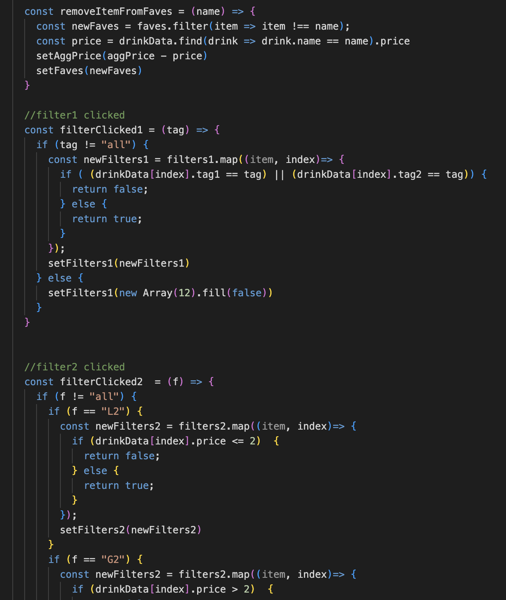

Implementation
Cards again prove to be the best system here. Bootstrap has a nice library for working with them.
At first, I was confused about how to manage state information.
In studio, I was passing state getters and setters around to different elements.
For the full website, I kept all the main functions in the main App program, and just called them from the component.
Each component only gets the data it needs to render itself!
App.js
DrinkItem.js

Reflections
This was a fun project. I can see why react has become the most widespread tool used in real world frontend development.
Most of the websites I designed for this class, inclduing this one, were pretty simple and didn't need a whole bunch of features, so they didn't use much javascript.
This was the only one where I felt like I had to do "programming" in the traditional sense.
It was a little tricky to get the hang of it at first, but once I got the whole passing around functions thing down, it worked pretty well.
It was most helpful to learn that javascript is more of a functional language than an object-oriented one, despite sharing a name and a good amount of syntax with java.
Not learning react until the end allowed the class to focus more on the actual design of user experiences, not just learning as many tools as possible.
The most important part of working on anything user-facing is to make your product a good experience for your users, and that can often be achieved with
simple tools. The class stressed that what is more important than the tools used, is how well designed the user experience is from the start.
Prototyping, user testing, using a hierarchy of information, and considering accessibility are all essential parts of creating a good interface, regardless
of what tools you happen to be using, digital or otherwise.